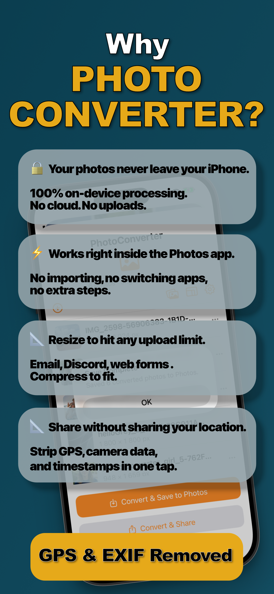

You went looking for a photo file and found a strange extension: .HEIC. It's not a bug and your phone isn't misconfigured, it's a deliberate Apple choice that saves you gigabytes. It just has one sharp edge.
What HEIC Actually Is
HEIC is a modern image container that stores photos compressed with HEVC, the same technology behind 4K video streaming. The practical result: a 12-megapixel photo that would be ~4 MB as a JPEG is ~2 MB as HEIC, with no visible quality difference. It also supports Live Photos, depth data, and burst sequences more efficiently.
Why Apple Made It the Default
Storage. Halving photo size doubles how many pictures fit on your phone and in your iCloud plan. Inside the Apple ecosystem the format is invisible, Photos, Messages, and AirDrop between Apple devices all handle it seamlessly, converting on the fly when needed.
When HEIC Becomes a Problem
The moment a photo leaves the ecosystem: a Windows PC without codecs, an older Android phone, a government upload portal, a CMS, a job application form. That's when “same quality, half the size” becomes “file not supported”, and when you need a converter.
Convert HEIC Photos When You Need To (Step by Step)
- Select your photos in the Photos appOpen Photos and select one image or dozens, the extension handles a whole batch in one pass.
- Share to Photo ConverterTap Share and choose “Convert with PhotoConverter.” No app switching, no importing: the batch loads right there in the share sheet.
- Choose format, size, and privacyPick JPEG, PNG, HEIC, or PDF. Resize by dimension or target a file size, adjust quality, and optionally enable “Remove all metadata” to strip EXIF and GPS.
- Convert and save backTap Convert. Everything is processed on-device in seconds and saved straight back to your library, or shared wherever it needs to go.

Should You Turn HEIC Off Entirely?
You can, Settings → Camera → Formats → Most Compatible makes the camera shoot JPEG, but you'll pay double the storage for every photo, forever, to avoid an occasional conversion. Keeping HEIC and converting on demand is usually the better trade: keep the savings, convert the exceptions in one tap.
Try it on your own photos
Photo Converter is free to download with a 3-day free trial, convert your first batch in the next two minutes, without anything leaving your phone.
Get Photo Converter on the App Store